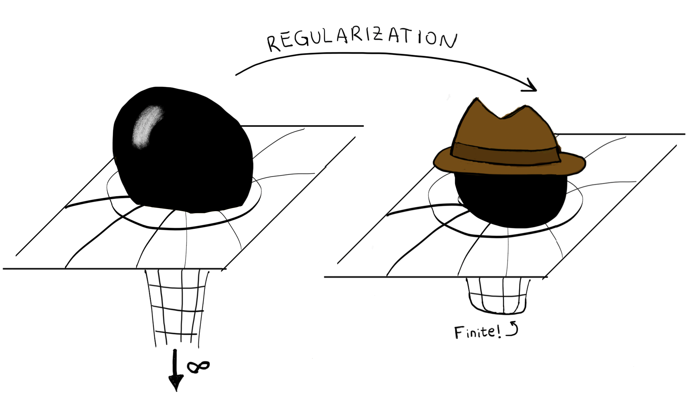
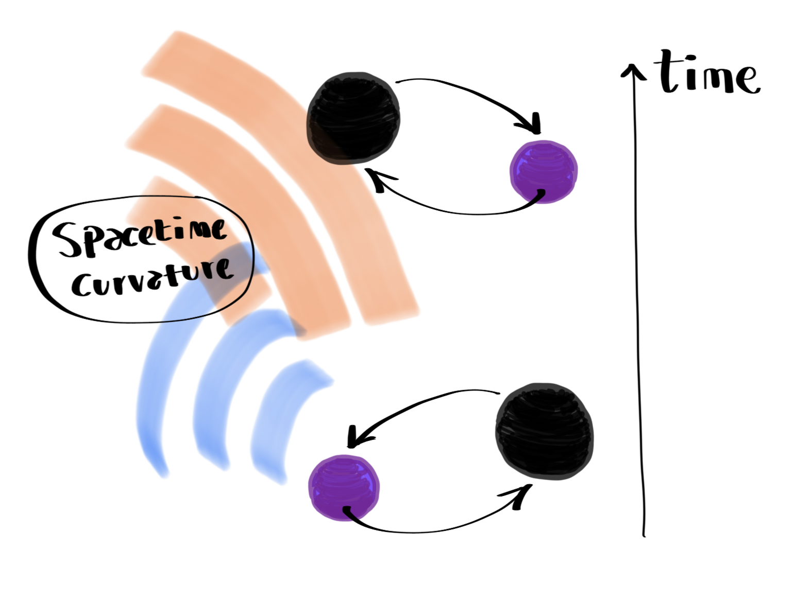
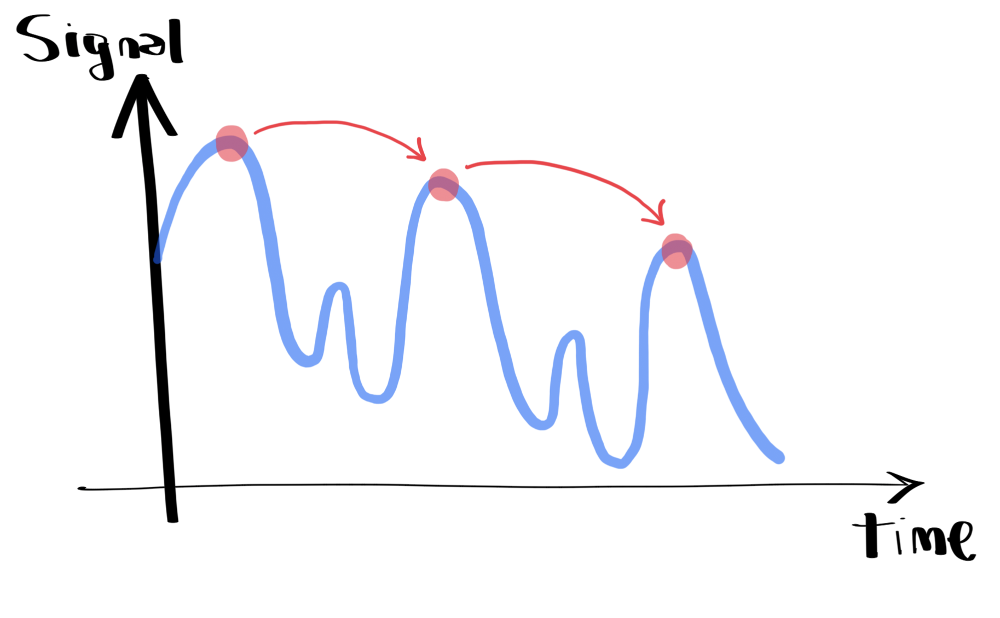

Regularización de autocampos

Los objetos compactos, como los agujeros negros y las estrellas de neutrones, generan campos gravitatorios que afectan tanto a su entorno como a su propio movimiento. Este fenómeno, conocido como autofuerza gravitatoria, es fundamental para describir con precisión la evolución de sistemas binarios. Sin embargo, cuando aproximamos estos objetos como partículas puntuales, aparece una dificultad: sus campos gravitatorios se vuelven singulares precisamente en los puntos donde necesitamos evaluar sus efectos. Estas divergencias no son "reales", sino que son artefactos matemáticos de la descripción idealizada, por lo que es necesario desarrollar procedimientos sistemáticos que permitan extraer información físicamente relevante de estos campos.
En colaboración con Abraham Harte y Éanna Flanagan, desarrollé un marco teórico que permite regularizar sistemáticamente estos campos singulares a órdenes arbitrarios en teoría de perturbaciones. Nuestro enfoque extiende el tratamiento habitual de la autofuerza gravitatoria para incluir interacciones no lineales, proporcionando un método general para identificar las contribuciones físicamente relevantes al movimiento de un objeto.
Publicación relacionada: arXiv:2504.11912
Dinámica conservativa y disipativa de sistemas binarios
en presencia de efectos hereditarios

Los efectos hereditarios surgen cuando la radiación gravitacional emitida por un sistema binario se dispersa al interactuar con la curvatura del espacio-tiempo y vuelve a interactuar con el sistema en un instante posterior. Como consecuencia, la dinámica conserva una memoria de su evolución pasada: el movimiento en un instante dado depende de toda la trayectoria previa del sistema. Esta dependencia no local desafía la descripción habitual de la dinámica en el espacio de fases (basada únicamente en las posiciones y los momentos instantáneos) y complica la distinción entre los efectos conservativos, que preservan la energía del sistema, y los efectos disipativos, que producen una pérdida de energía a través de la radiación gravitacional.
En colaboración con Éanna Flanagan, investigué cómo recuperar una descripción hamiltoniana convencional en presencia de estos efectos. Demostramos que la parte conservativa de la autofuerza gravitatoria a primer orden puede describirse mediante un Hamiltoniano, a pesar de su aparente dependencia de la historia del sistema. Posteriormente, desarrollé un marco teórico general que extiende este resultado a órdenes arbitrarios en teoría de perturbaciones, demostrando que una amplia clase de principios de acción no locales puede reformularse en términos de hamiltonianos locales. Estos resultados proporcionan una base sistemática para estudiar la dinámica conservativa de sistemas binarios en presencia de efectos hereditarios.
Publicaciones relacionadas: arXiv:2205.01667 · arXiv:2302.10233 · arXiv:2406.00106 · arXiv:2605.14958
Evolución en tiempo finito de sistmas binarios

The motion of two objects orbiting each other is usually described by equations that tell us how their positions and momenta change at each instant. To determine their future evolution, we must solve these equations, typically by advancing the system through many small time steps. But what if, instead, we could describe how the system changes over an entire orbit, without having to follow every intermediate step?
El Magnusiano ofrece una manera de hacer precisamente esto. Se trata de un objeto matemático que captura el efecto acumulado de la dinámica durante un intervalo finito de tiempo, permitiéndonos construir un mapa que lleva al sistema directamente de una configuración inicial a otra posterior. En colaboración con el grupo de Jan Steinhoff en el Instituto Albert Einstein, he estado desarrollando este formalismo para sistemas binarios que interactúan gravitacionalmente, extendiéndolo para incluir la pérdida de energía y momento angular a través de la emisión de ondas gravitacionales. Esto abre la posibilidad de describir la evolución a largo plazo de sistemas binarios mediante una sucesión de mapas orbitales, preservando al mismo tiempo propiedades importantes de su estructura matemática.
Publicación relacionada: arXiv:2607.24335